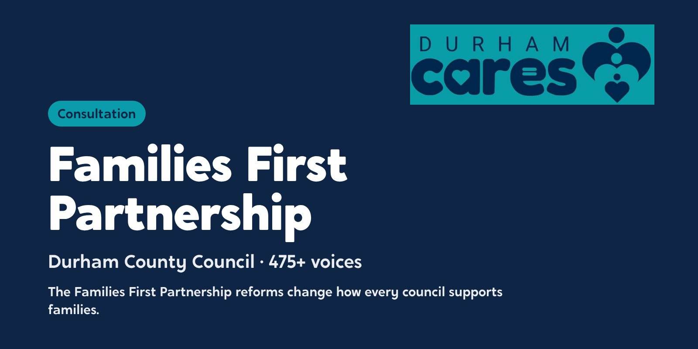

The starting point
Durham supports 88,000 children across coastal towns, market towns and some of England’s most rural communities. The Families First Partnership reforms asked it to bring family help, child protection and family networks closer together. Durham wanted that change built on what staff and families were actually experiencing.
What we did
- August 2025ListenTeam workshops, one-to-ones, shadowing, micro-workshops and family visits
- To December 2025475+ voicesAround 375 practitioners, 50 managers and 50 families and young people across 50 teams
- AlongsideFive workstreamsFront Door, Family Help, MACPT, Family Group Decision Making and Practice, project-managed with each lead
- Young peopleFilming weekYoung people filmed 35+ practitioners, staff and peers for seven launch videos, a podcast and a documentary
Between August and December 2025 we heard from over 475 people across 50 teams: 11 Family Hub teams, 14 social work teams, 8 Integrated Family Services teams, and 17 specialist teams including Early Help, ASET, the kinship team, IROs, MASH, commissioning and senior leaders. That was around 375 practitioners, 50 managers and 50 families and young people. We used team workshops, one-to-one sessions, shadowing social workers, short micro-workshops and visits to families, so families on Child in Need, Child Protection, pre-birth and kinship pathways all had their say.
We also project-managed all five reform workstreams (Front Door, Family Help, MACPT, Family Group Decision Making and Practice), running workshops with each workstream lead on the timeline and approach.
Young people’s voice. Working closely with Durham’s care leavers team, we ran youth-led creative workshops, coached practitioners in the participation team, and wrote a strategy for a new Care Leavers Network. In a dedicated filming week, young people interviewed and filmed over 35 practitioners, staff and peers. The result was seven launch videos made by and featuring young people, a podcast, and a documentary following a care-experienced practitioner in the participation team.
What we heard
Across the teams and the families we heard the same things in different words. Families had to repeat their story every time they moved between services, and wanted the same worker to stay with them. In Durham’s rural communities, the distance families travel to get help came up again and again. And families wanted information they could actually understand.
What changed
The consultation’s recommendations are now shaping the co-design phase of Durham’s reforms. Partners and staff have said that being consulted early, and having the chance to shape the reforms, reflects Durham’s collaborative way of working. The young people who took part in the filming week developed real skills in interviewing, recording and storytelling, and the films are now used in engagement and induction.
See the work
What we made, and what it looked like.
Consultation
Over 475 people heard, from front-line staff to families, before the Families First changes were made.
Comms workshop
A workshop with Durham’s teams on how to communicate the reforms.
Launch films
Seven short films made with the people who do the work.